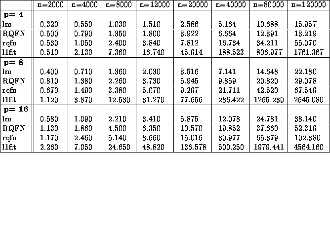

Tables are often a necessary evil and again SPLUS, augmented by some independently written functions provides a good set of tools. Consider the relatively simple problem of making the experimental output m.3 described above into a table in which each group of R timings is represented by its median. In SPLUS the array of medians is easily computed as for the previous figures,
m.3.m_apply(m.3, c(1,3,4),"median")To make this into the table appearing below, we use Alan Zalovsky's function latex.table in the following way,
#output from m.4 and m.5 is structured in the following way: #m.[56]

times,c(1,3,4),"median") m.6.m_apply(m.6times,c(1,3,4),"median") #reorder elements of these arrays m.5.m_m.5.m[c(1,4,3,2),3:1,4:1] m.6.m_m.6.m[c(1,4,3,2),3:1,4:1] table.4.1_rbind(cbind(m.6.m[,1,],m.5.m[,1,]), cbind(m.6.m[,2,],m.5.m[,2,]), cbind(m.6.m[,3,],m.5.m[,3,])) dimnames(table.4.1)_list(rep(methods,3),paste("n=",z,sep="")) latex.table(table.4.1,dec=3, rowlabel="",rgroup=paste("p=",ps),n.rgroup=c(4,4,4),label="", caption="Median Timings for Median Regression")Like our graphics functions this produces a file, this time consisting of LaTeX commands, which can be incorporated into a document with the command,
which produces the following table.
Table 1: Median Timings for Median Regression
Again, it is possible to alter the form of the table without changing the form of the LaTeX document. As with all the SPLUS commands we have mentioned thus far, further details about the commands can be found using the SPLUS command help(function.name). This raises the important point that one of the responsibilities of writing new SPLUS functions which may be used by other eventually is to provide documentation for each of them. Obviously, these .d documentation files should be provided in the archive associated with each project. Details on documentation generation are given in each of the basic 5 texts. We might also remind the reader that the new SPLUS interface to the help facility which can be initialized with the command
help.start(gui="motif")on our xterms, for example, provides a key-word based search engine which is often successful in identifying new tools which are helpful in carrying a project forward.